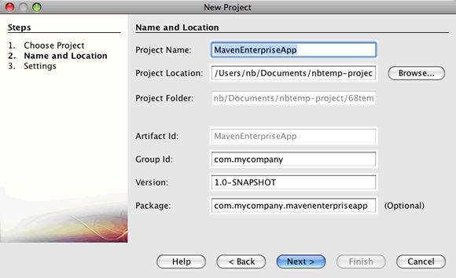

Apache NetBeans
Apache NetBeansLatest release
Criando uma Aplicação Corporativa com o Maven
| This tutorial needs a review. You can edit it in GitHub following these contribution guidelines. |
Este tutorial demonstra como criar uma aplicação simples do enterprise utilizando arquétipos Maven e NetBeans IDE. O tutorial fornece também algumas explicações e dicas sobre o uso do IDE para criar e construir aplicações Maven.
Neste tutorial, você criará uma aplicação corporativa que é encapsulada como um arquivo compactado EAR e implantado no GlassFish Server Open Source Edition 3. Você cria a aplicação utilizando o arquétipo da Aplicação Corporativa Maven no assistente Novo Projeto. A aplicação contém um projeto EJB que contém uma classe de entidade persistente, um bean baseado em mensagens e uma fachada de bean de sessão para a entidade. A aplicação também contém um projeto web que contém dois servlets.
Exercícios do Tutorial
Para seguir este tutorial, são necessários os recursos e o software a seguir.
| Software ou Recurso | Versão Necessária |
|---|---|
Versão Java EE 7.2, 7.3, 7.4, 8.0 |
|
versão 7 ou 8 |
|
GlassFish Server Open Source Edition |
4.x |
Pré-requisitos
Este tutorial pressupõe que você tenha algum conhecimento básico das tecnologias a seguir, ou alguma experiência de programação com elas:
-
Programação em Java
-
NetBeans IDE
Antes de começar este tutorial, talvez você queira se familiarizar com a documentação a seguir.
Você pode fazer download de um arquivo compactado zip do projeto finalizado.
Utilizando o Maven no IDE
O suporte ao Maven está totalmente integrado no NetBeans IDE. Desenvolver um projeto que utiliza o framework do Maven é quase igual a desenvolver um projeto no Ant. No entanto, há algumas diferenças relacionadas ao modo como o Maven constrói os projetos e trabalha com as dependências. As dicas a seguir podem ajudá-lo a evitar alguns problemas caso esteja criando uma aplicação Maven pela primeira vez.
Verifique as definições do Maven
Se este for seu primeiro Projeto Maven, pode ser necessário verificar as definições da configuração do Maven na janela Opções. O Maven está incorporado ao IDE e é instalado quando você instala o IDE.
-
Abra a janela Opções no IDE (Ferramentas > Opções; NetBeans > Preferências no Mac).
-
Selecione a categoria Java na janela Opções e clique na guia Maven.
-
Confirme se um Início do Maven está especificado.
Você pode usar a versão do Maven incorporada no IDE ou especificar a localização de uma instalação local do Maven (requer versão 2.0.9 ou posterior).
-
Clique em OK para fechar a janela Opções.
| O suporte a Maven será automaticamente ativado quando o Java estiver ativado no IDE. Você precisará ativar o plug-in Java EE, se não estiver ativado. |
Atualizar seus repositórios Maven
Os repositórios remotos e locais do Maven são utilizados para a funcionalidade autocompletar código e para construir projetos. É necessário atualizar os índices dos repositórios remotos do Maven para garantir que os artefatos necessários estejam prontamente disponíveis no momento de desenvolver o projeto. Você pode configurar com que frequência o IDE verifica as atualizações na guia Maven da janela Opções. Você também pode executar uma verificação imediata das atualizações e explorar os repositórios remotos e locais do Maven na janela Serviço.
-
Escolha Janela > Serviços para abrir a janela Serviços.
-
Expanda o nó Repositórios do Maven na janela Serviços.
-
Expanda um nó de repositório para exibir os artefatos.
-
Clique com o botão direito do mouse no repositório e escolha Atualizar Índice no menu pop-up.
Quando você clica em Atualizar Índices, o IDE verifica e faz o download do índice mais recente de cada um dos repositórios remotos do Maven. Um índice representa o estado atual dos artefatos localizados no repositório e é utilizado para proporcionar referências aos artefatos que estão disponíveis na aplicação. Por default, o IDE não faz download de um artefato de um repositório até que o artefato seja explicitamente necessário.
Você pode procurar um artefato clicando com o botão direito no nó Repositórios Maven na janela Serviços e escolhendo Localizar.
|
Para obter mais detalhes sobre o uso do Maven no NetBeans IDE, consulte a seção Configurando o Maven no tutorial Criando uma Aplicação Maven Swing Utilizando Hibernação e também Melhores Práticas para o Apache Maven no NetBeans IDE.
Criando o Projeto de Aplicação Corporativa Maven
O objetivo deste exercício é criar um projeto de aplicação corporativa utilizando o arquétipo de Aplicação Corporativa Maven incluído com o IDE. O arquétipo de aplicação corporativa também criará um projeto EJB e um projeto webapp.
O IDE inclui vários arquétipos Maven no assistente Novo Projeto para ajudá-lo a criar rapidamente tipos de projetos NetBeans comuns, como projetos de aplicações do enterprise (EAR), projetos de aplicações web (WAR) e projetos de módulo EJB (JAR). O assistente também permite criar projetos dos arquétipos em repositórios remotos registrados.
-
Selecione Arquivo > Novo Projeto (Ctrl-Shift-N; ⌘-Shift-N no Mac) no menu principal.
-
Selecione Aplicação Corporativa na categoria Maven. Clique em Próximo.

Figure 1. Tipo do projeto Aplicação Corporativa Maven no assistente Novo Projeto
-
Digite MavenEnterpriseApp como nome do projeto e defina a Localização do Projeto.
-
(Opcional) Modifique os detalhes do artefato. Clique em Próximo.

Figure 2. Detalhes do Projeto Maven no assistente Novo Projeto
-
Selecione GlassFish Server como o Servidor.
-
Defina a versão do Java EE como Java EE 6 ou Java EE 7.
-
Selecione Criar Módulo EJB e Criar Módulo da Aplicação Web. Clique em Finalizar.
Quando você clica em Finalizar, o IDE cria os projetos a seguir a partir do arquétipo de Aplicação Corporativa Maven.
-
EJB. (MavenEnterpriseApp-ejb) O projeto EJB geralmente contém o código-fonte com a lógica de negócio da aplicação. O projeto EJB é encapsulado como um arquivo compactado EJB JAR.
-
Webapp. (MavenEnterpriseApp-web) O projeto Webapp geralmente contém a camada de apresentação da aplicação, como páginas e servlets JSF e JSP. O projeto Webapp também pode conter código-fonte com lógica de negócios. O projeto Webapp é encapsulado como um arquivo compactado WAR.
-
Montagem. (MavenEnterpriseApp) O projeto Montagem é usado para montar um arquivo compactado EAR a partir dos arquivos compactados EJB e WAR. O projeto Montagem não contém nenhum código-fonte.
-
Aplicação Corporativa. (MavenEnterpriseApp-ear) O projeto de Aplicação Corporativa não contém um código-fonte. A Aplicação Corporativa contém apenas um arquivo POM (
pom.xml) com detalhes sobre os módulos contidos na aplicação corporativa.

Figure 3. Janela Projetos que mostra projetos gerados
Depois de criar o projeto de aplicação corporativa, o projeto da aplicação corporativa é marcado porque algumas dependências não estão disponíveis. Se você expandir o nó Dependências do projeto MavenEnterpriseApp-ear, poderá observar se quaisquer bibliotecas obrigatórias estão faltando ou as que não estão no classpath. O projeto da aplicação corporativa tem dependências em JAR e WAR, que serão encapsuladas e estarão disponíveis depois que os projetos EJB e web forem compilados. Observe que MavenEnterpriseApp-ejb e MavenEnterpriseApp-web são listados como dependências.
Em alguns casos você verá um ícone Marven na barra de status que você poderá clicar para executar uma construção primária e resolver dependências ausentes.

Figure 4. O ícone do Maven na barra de status permite executar uma construção primária
Codificando o Projeto EJB
O projeto EJB contém a lógica de negócio da aplicação. Nesta aplicação, o contêiner GlassFish gerenciará as transações utilizando a API de Transação Java (JTA). Neste tutorial, você criará uma classe de entidade, um bean baseado em mensagens e uma fachada de sessão para a classe de entidade no projeto EJB.
Criando a Unidade de Persistência
Neste exercício, você cria uma unidade de persistência no projeto EJB. A unidade de persistência especifica os detalhes da conexão do banco de dados e como as transações são gerenciadas. Para esta aplicação, você especificará a JTA no assistente Nova Unidade de Persistência, já que deseja que o GlassFish Server gerencie as transações.
Para criar a unidade de persistência, execute as seguintes etapas.
-
Clique com o botão direito do mouse no nó do projeto EJB e selecione Novo > Outro no menu pop-up para abrir o assistente Novo Arquivo.
-
Selecione Unidade de Persistência na categoria Persistência. Clique em Próximo.
-
Selecione EclipseLink como o Provedor de Persistência na caixa de diálogo Nova Unidade de Persistência.
-
Selecione uma fonte de dados (por exemplo, selecione
jdbc/samplese desejar utilizar o JavaDB).
A fonte de dados jdbc/sample é incluída com o IDE ao instalá-lo e ao GlassFish Server, mas você pode especificar uma fonte de dados diferente, se quiser utilizar um outro banco de dados.
Você pode manter as outras opções default (nome da unidade de persistência, provedor da persistência EclipseLink).
-
Certifique-se de que a opção Utilizar APIs de Transação Java esteja selecionada e de que Estratégia de Geração de Tabela esteja definida como Criar, para que as tabelas baseadas nas classes de entidade sejam criadas quando a aplicação for implantada. Clique em Finalizar.

Figure 5. Assistente Nova Unidade de Persistência
Quando você clica em Finalizar, o IDE cria o arquivo XML persistence.xml e o abre no editor. Na janela Projetos, você pode observar que o arquivo foi criado no diretório Outher Sources > src/main/resources > META-INF . O arquivo contém detalhes sobre a conexão ao banco de dados e como as transações são gerenciadas. Se clicar na guia Código-fonte no editor, você poderá ver os seguintes detalhes sobre a unidade de persistência.
...
<persistence-unit name="com.mycompany_MavenEnterpriseApp-ejb_ejb_1.0-SNAPSHOTPU" transaction-type="JTA">
<provider>org.eclipse.persistence.jpa.PersistenceProvider</provider>
<jta-data-source>jdbc/sample</jta-data-source>
<exclude-unlisted-classes>false</exclude-unlisted-classes>
<properties>
<property name="eclipselink.ddl-generation" value="create-tables"/>
</properties>
</persistence-unit>Você pode observar que a JTA está especificada como o tipo de transação e que a aplicação utilizará a fonte de dados registrada jdbc/sample .
Criando a Classe de Entidade
Neste exercício, você criará uma classe de entidade no projeto EJB para representar os objetos que serão persistidos no banco de dados. Para criar a classe de entidade NewsEntity, execute as seguintes etapas.
-
Clique com o botão direito do mouse no módulo EJB na janela Projetos e selecione Novo > Outro para abrir o assistente Novo arquivo.
-
Selecione Classe de Entidade na categoria Persistência. Clique em Próximo.
-
Digite NewsEntity para Nome da Classe.
-
Digite ejb como o Pacote e deixe Tipo de Chave Primária como Longa. Clique em Finalizar.
Quando você clica em Finalizar, a classe de entidade NewsEntity.java se abrirá no Editor de Código-Fonte. No Editor de Código-Fonte, adicione alguns campos executando as seguintes etapas.
-
Adicione as seguintes declarações de campo à classe.
private String title;
private String body;-
Clique com o botão direito do mouse no Editor de Código-Fonte entre a definição da classe e selecione Inserir Código (Alt-Insert; Ctrl-I no Mac) > Getter e Setter.
-
Na caixa de diálogo Gerar Getters e Setters, selecione os campos
bodyetitle. Clique em Gerar. -
Salve as alterações feitas na classe.
Criando o Bean Baseado em Mensagens
Neste exercício, você criará um bean baseado em mensagens no projeto EJB. Um bean baseado em mensagens é um enterprise bean que permite a troca assíncrona de mensagens. A aplicação NewsApp utiliza um bean baseado em mensagens para receber e processar mensagens enviadas à fila por um servlet no módulo Web.
Para utilizar um bean baseado em mensagens em uma aplicação, os recursos de conector utilizados pelo bean precisam estar registrados no servidor. Enquanto estiver implantando no GlassFish Server, você poderá criar os recursos diretamente no servidor por meio da Console Admin ou poderá criá-los na implantação especificando os detalhes no arquivo descritor glassfish-resources.xml . Quando a aplicação é implantada no servidor, o servidor registra os recursos com base no arquivo descritor. Quando você usa o assistente Novo Arquivo no IDE para criar um bean baseado em mensagens, o IDE gerará os elementos no arquivo descritor para você.
Em um projeto Maven, o arquivo glassfish-resources.xml está localizado no diretório src/main/setup no nó do projeto na janela Arquivos.
-
Clique com o botão direito do mouse no módulo EJB na janela Projetos e selecione Novo > Outro para abrir o assistente Novo arquivo.
-
Na categoria Enterprise JavaBeans, selecione Bean Baseado em Mensagens. Clique em Próximo.
-
Digite NewMessage para Nome EJB.
-
Selecione ejb na lista drop-down Pacote.
-
Clique no botão Adicionar ao lado do campo Destino do Projeto para abrir a caixa de diálogo Adicionar Destino da Mensagem.
-
Na caixa de diálogo Adicionar Destino da Mensagem, digite jms/NewMessage e selecione Fila como o tipo de destino. Clique em OK.

Figure 6. Caixa de Diálogo Adicionar Destino da Mensagem
-
Confirme se o destino do projeto está correto. Clique em Próximo.

Figure 7. Assistente Novo Bean Baseado em Mensagens
-
Aceite as definições default nas Propriedades de Configuração de Ativação. Clique em Finalizar.
Quando você clica em Finalizar, o IDE gera a classe do bean e adiciona as anotações seguintes que identificam a classe como um bean baseado em mensagens e as propriedades de configuração.
@MessageDriven(mappedName = "jms/NewMessage", activationConfig = {
@ActivationConfigProperty(propertyName = "acknowledgeMode", propertyValue = "Auto-acknowledge"),
@ActivationConfigProperty(propertyName = "destinationType", propertyValue = "javax.jms.Queue")
})
public class NewMessage implements MessageListener {
public NewMessage() {
}
@Override
public void onMessage(Message message) {
}
}-
Injete o recurso
MessageDrivenContextna classe, adicionando o seguinte campo anotado à classe.
public class NewMessage implements MessageListener {
*@Resource
private MessageDrivenContext mdc;*-
Introduza o gerenciador de entidade na classe, adicionando o seguinte campo anotado (em negrito).
public class NewMessage implements MessageListener {
@Resource
private MessageDrivenContext mdc;
*@PersistenceContext(unitName="com.mycompany_MavenEnterpriseApp-ejb_ejb_1.0-SNAPSHOTPU")
private EntityManager em;*A anotação @PersistenceContext especifica o contexto declarando a unidade de persistência. O valor de unitName é o nome da unidade de persistência.
-
Adicione o seguinte método
save(em negrito).
public NewMessage() {
}
@Override
public void onMessage(Message message) {
}
*private void save(Object object) {
em.persist(object);
}*-
Modifique o método
onMessage, adicionando o seguinte (em negrito) ao corpo:
public void onMessage(Message message) {
*ObjectMessage msg = null;
try {
if (message instanceof ObjectMessage) {
msg = (ObjectMessage) message;
NewsEntity e = (NewsEntity) msg.getObject();
save(e);
}
} catch (JMSException e) {
e.printStackTrace();
mdc.setRollbackOnly();
} catch (Throwable te) {
te.printStackTrace();
}*
}-
Corrija as instruções de importação (Ctrl-Shift-I; ⌘-Shift-I no Mac) e salve as alterações.
quando geramos as instruções de importação, queremos garantir a importação das bibliotecas jms * e * javax.annotation.Resource *.
|
Para obter mais detalhes sobre beans baseados em mensagens, consulte o capítulo O que é um Bean Baseado em Mensagem? no Tutorial do Java EE 6 , Parte I.
Criando o Bean de Sessão
Neste exercício, você utilizará o assistente para criar uma fachada de bean de sessão para a classe de entidade NewsEntity. O assistente gerará alguns métodos criar , editar e localizar que podem ser acessados nos servlets no projeto webapp.
-
Clique com o botão direito do mouse no módulo EJB e escolha Novo > Outro.
-
Na categoria Persistência, selecione Beans de Sessão para Classes de Entidade e clique em Próximo.
-
Selecione ejb.NewsEntity na lista de classes de entidades disponíveis e clique em Adicionar para mover a classe para o painel Classes de Entidades Selecionadas. Clique em Próximo.
-
Insira ejb como Pacote. Clique em Finalizar.
Quando você clica em Finalizar, o IDE gera duas classes de fachada de sessão: AbstractFacade.java e NewsEntityFacade.java que estende a classe de fachada abstrata. A classe de fachada abstrata define vários métodos que são comumente utilizados com classes de entidade.

Figure 8. Assistente Beans de Sessão para Classes de Entidade
Codificando a Aplicação Web
Nesta seção, você criará dois servlets no projeto webapp.
Criando o Servlet ListNews
Neste exercício, você criará o servlet ListNews que será utilizado para exibir uma lista de mensagens postadas. As anotações serão utilizadas para injetar a fachada de sessão, acessar o método findAll e recuperar as mensagens postadas.
-
Clique com o botão direito do mouse em um projeto de módulo web e selecione Novo > Servlet.
-
Digite ListNews para o Nome da Classe.
-
Digite web para o Nome do Pacote. Clique em Finalizar.
Quando você clicar em Finalizar, a classe ListNews.java irá se abrir no Editor de Código-Fonte.
-
Clique com o botão direito do mouse no Editor de Código-Fonte entre a definição de classes e selecione Inserir Código (Alt-Insert; Ctrl-I no Mac) > Chamar Enterprise Bean.
-
Na caixa de diálogo Chamar Enterprise Bean, expanda o nó MavenEnterpriseApp-ejb e selecione NewEntityFacade. Clique em OK.

Figure 9. Caixa de diálogo Chamar Enterprise Bean
Quando você clica em OK, o recurso EJB é injetado no servlet utilizando a anotação @EJB .
@WebServlet(name = "ListNews", urlPatterns = {"/ListNews"})
public class ListNews extends HttpServlet {
@EJB
private NewsEntityFacade newsEntityFacade;-
No método
processRequest, modifique o método adicionando as seguintes linhas (em negrito) ao corpo do método:
out.println("<h1>Servlet ListNews at " + request.getContextPath () + "</h1>");
*
List news = newsEntityFacade.findAll();
for (Iterator it = news.iterator(); it.hasNext();) {
NewsEntity elem = (NewsEntity) it.next();
out.println(" <b>"+elem.getTitle()+" </b><br />");
out.println(elem.getBody()+"<br /> ");
}
out.println("<a href='PostMessage'>Add new message</a>");
*
out.println("</body>");| Pode ser necessário cancelar o comentário do código, se estiver utilizando uma versão anterior do IDE. |
-
Corrija as importações (Ctrl-Shift-I; ⌘-Shift-I no Mac) e salve as alterações.
Ao gerar as instruções de importação, você deseja importar as bibliotecas java.util .
Criando o Servlet PostMessage
Neste exercício, você criará o servlet PostMessage que será utilizado para postar mensagens. Você usará anotações para injetar os recursos JMS que criou diretamente no servlet, especificando o nome da variável e o nome para o qual é mapeado. Em seguida, você adicionará o código para enviar a mensagem JMS e o código para o form HTML para adicionar uma mensagem.
-
Clique com o botão direito do mouse em um projeto de módulo web e selecione Novo > Servlet.
-
Digite PostMessage para Nome da Classe.
-
Selecione web como o nome do Pacote. Clique em Finalizar.
Quando você clicar em Finalizar, a classe PostMessage.java será aberta no Editor de Código-Fonte.
-
No Editor de Código-Fonte, utilize anotações para injetar os recursos
ConnectionFactoryeQueue, adicionando as seguintes declarações de campo.
@WebServlet(name="PostMessage", urlPatterns={"/PostMessage"})
public class PostMessage extends HttpServlet {
*@Resource(mappedName="jms/NewMessageFactory")
private ConnectionFactory connectionFactory;
@Resource(mappedName="jms/NewMessage")
private Queue queue;*-
Corrija as importações para importar as bibliotecas *
javax.jms*.

Figure 10. Caixa de diálogo Corrigir Todas as Importações
Se o IDE não oferecer javax.jms como uma opção, você poderá procurar nos repositórios pelo artefato correto clicando no ícone de sugestão na margem ao lado de private ConnectionFactory connectionFactory; e selecionando Pesquisar Dependência em Repositórios Maven.
|

Figure 11. Dica no editor para procurar dependências nos repositórios
Você pode utilizar a caixa de diálogo Pesquisar nos Repositórios Maven para localizar o artefato javaee-api-6.0 que contém ConnectionFactory .

Figure 12. Caixa de diálogo Pesquisar nos Repositórios Maven
-
Adicione o código a seguir para enviar as mensagens JMS ao método
processRequest.
response.setContentType("text/html;charset=UTF-8");
*// Add the following code to send the JMS message
String title=request.getParameter("title");
String body=request.getParameter("body");
if ((title!=null) && (body!=null)) {
try {
Connection connection = connectionFactory.createConnection();
Session session = connection.createSession(false, Session.AUTO_ACKNOWLEDGE);
MessageProducer messageProducer = session.createProducer(queue);
ObjectMessage message = session.createObjectMessage();
// here we create NewsEntity, that will be sent in JMS message
NewsEntity e = new NewsEntity();
e.setTitle(title);
e.setBody(body);
message.setObject(e);
messageProducer.send(message);
messageProducer.close();
connection.close();
response.sendRedirect("ListNews");
} catch (JMSException ex) {
ex.printStackTrace();
}
}*-
Adicione o código a seguir (em negrito) ao web form para adicionar uma mensagem.
out.println("Servlet PostMessage at " + request.getContextPath() + "</h1>");
*// The following code adds the form to the web page
out.println("<form>");
out.println("Title: <input type='text' name='title'><br/>");
out.println("Message: <textarea name='body'></textarea><br/>");
out.println("<input type='submit'><br/>");
out.println("</form>");
*
out.println("</body>");| Pode ser necessário cancelar o comentário do código, se estiver utilizando uma versão anterior do IDE. |
-
Corrija as importações e salve as alterações.

Figure 13. Caixa de diálogo Corrigir Todas as Importações
Você deseja importar as bibliotecas * javax.jms * para Connection , ConnectionFactory , Session e Queue .
|
Construindo a Aplicação com Maven
Agora que finalizou a codificação da aplicação, você poderá utilizar o Maven para construir a aplicação corporativa. Nesta seção, você construirá e encapsulará os projetos em um arquivo compactado EAR. O archive EAR conterá um archive EJB JAR e um arquivo compactado WAR. Depois de criar o arquivo compactado EAR, você pode implantá-lo no servidor de destino.
Trabalhando com Dependências do Projeto
Neste exercício, você examinará o POM pom.xml do projeto web e modificará o POM para impedir que sejam incluídos artefatos desnecessários no WAR durante o encapsulamento. Cada projeto Maven contém um arquivo pom.xml que contém os detalhes sobre o conteúdo dos arquivos compactados. Todas as bibliotecas externas necessárias para o projeto estão listadas como dependências no POM. Você pode modificar o POM para especificar as dependências que precisam estar incluídas ou deveria ser excluídas durante o encapsula mento do arquivo compactado.
Nesta aplicação, os arquivos compactados EJB JAR e WAR serão encapsulados em um arquivo compactado EAR. Se olhar para o pom.xml do projeto MavenEnterpriseApp-ear, poderá notar que o EJB e o WAR estão declarados como dependências.

Figure 14. pom.xml do projeto EAR
Se olhar o pom.xml do projeto web do editor, você poderá notar que o arquivo compactado EJB está declarado como uma dependência e o escopo está especificado como fornecido . Quando o valor do elemento do escopo de um artefato é fornecido , o artefato não será incluído durante o encapsulamento. O projeto web precisa do archive EJB como uma dependência, mas nesta aplicação você não deseja incluir o arquivo compactado EJB no WAR durante o encapsulamento porque o arquivo compactado EJB estará disponível e será fornecido como parte do arquivo compactado EAR.

Figure 15. pom.xml do projeto Web App
Você pode abrir pom.xml no editor e clicar na guia Gráfico para ver uma representação visual das dependências do projeto. Se estiver usando uma versão mais antiga do IDE, você pode clicar com o botão direito do mouse no pom.xml no editor e escolher Mostrar Gráfico de Dependência. Você pode colocar o cursor sobre um artefato para exibir uma dica de ferramenta com os detalhes do artefato.

Figure 16. Gráfico de dependências
Execute as etapas a seguir para modificar o POM do projeto web para adicionar um elemento escopo à dependência no artefato javaee-api .
-
Expanda o nó Arquivos do Projeto no projeto web.
-
Clique duas vezes em
pom.xmlpara abrir o arquivo no editor. -
Confirme se
providedestá definido como valor do<escopo>do artefatojavaee-api.
Se o valor não for provided , edite o POM para fazer as seguintes alterações:
<dependency>
<groupId>javax</groupId>
<artifactId>javaee-api</artifactId>
<version>7.0</version>
<type>jar</type>
*<scope>provided</scope>*
</dependency>Você pode utilizar a funcionalidade autocompletar código no editor POM para ajudá-lo a editar o arquivo.

Figure 17. função autocompletar código para elemento de escopo no POM
Quando você declarar que a dependência é fornecida, o Maven não encapsulará o artefato ao construir o arquivo compactado WAR.
-
Salve as alterações.
Construindo com Dependências
O framework de construção Maven percorre uma sequência específica de fases, e cada fase compreende uma ou mais metas e pode ser configurada para utilizar vários plug-ins Maven. O item de menu Construir com Dependências é mapeado para a fase instalar do ciclo de vida de construção do Maven e é configurado para utilizar o plug-in Reactor. Quando você seleciona Construir com Dependências no menu pop-up, o Maven constrói a aplicação e as dependências necessárias e copia os artefatos de construção no repositório local.
É possível modificar como as fases e as metas do Maven são mapeados para as ações do menu no painel Ações da caixa de diálogo Propriedades do projeto.
Para construir o arquivo compactado EAR, execute as etapas a seguir.
-
Clique com o botão direito do mouse no nó do projeto MavenEnterpriseApp-ear e selecione Construir com Dependências.
Quando você constrói o projeto EAR utilizando o plug-in Reactor, os subprojetos que são dependências do projeto EAR são construídos antes da construção do projeto EAR. A janela de Saída exibe a ordem de construção.

Figure 18. Janela de Saída que mostra a ordem de construção do Reator
Os resultados da construção também são exibidos na janela de Saída.

Figure 19. Janela de Saída que mostra o status de construção do Reator
Após a construção do projeto EAR, você pode ver o arquivo compactado EAR final dentro do diretório target no nó do projeto EAR na janela Arquivos.

Figure 20. Janela Arquivos que mostra o arquivo compactado EAR
Se o nome de artefato default com.mycompany tiver sido utilizado, você poderá utilizar o Browser do Repositório Maven para exibir os artefatos de construção expandindo com.mycompany no Repositório Local.
Para obter mais detalhes sobre a construção de projetos Maven, consulte Maven: Introdução ao Ciclo de vida de Construção em maven.apache.org.
Implantando e Executando a Aplicação
Esta seção descreve dois métodos para a implantação do arquivo compactado EAR no servidor. Você pode implantar a aplicação no GlassFish Server utilizando uma ação do menu no IDE ou a ferramenta Implantar na Console de Admin do GlassFish.
Implantando e Executando a Aplicação a partir do IDE
Neste exercício, você usará a ação Executar para implantar o arquivo compactado EAR no GlassFish Server. Após a implantação da aplicação, você abrirá a página ListNews da aplicação no browser e adicionará uma mensagem.
-
Clique com o botão direito do mouse no nó do projeto EAR na janela Projetos e selecione Executar.
Quando você clicar em Executar, o IDE implantará o arquivo compactado EAR e criará os recursos JMS no servidor. O IDE abrirá página default de índice do projeto (http://localhost:8080/MavenEnterpriseApp-web/) no browser.
-
Abra o browser no URL a seguir para exibir a página ListNews.
Quando você executa o projeto pela primeira vez, o banco de dados está vazio e não há mensagens a serem exibidas.

Figure 21. A página ListNews será aberta no browser
-
Clique em Adicionar nova mensagem.
-
Digite uma mensagem no form no servlet PostMessage. Clique em Submeter Consulta.

Figure 22. A página PostMessage será aberta no browser
Quando você adiciona uma mensagem com o servlet PostMessage, a mensagem é enviada para o bean baseado em mensagens para gravação no armazenamento persistente e o servlet ListNews é chamado para exibir as mensagens no banco de dados. A lista de mensagens no banco de dados recuperada pela ListNews, em geral, ainda não contém a nova mensagem, porque o serviço de mensagem é assíncrono.
Compilar no Salvamento e Implantar no Salvamento são ativados por default nos projetos Maven que especificam o GlassFish Server como o servidor de destino. Por exemplo, se você modificar o salvamento de um servlet, poderá recarregá-lo no browser e exibir as alterações sem ter que realizar reimplantação da aplicação.
Implantando da Console Admin do GlassFish
Neste exercício, você implantará o arquivo compactado EAR utilizando a ferramenta Implantar na Console Admin do GlassFish.
-
Expanda o nó Servidores na janela Serviços.
-
Inicie o GlassFish Server.
-
Clique com o botão direito do mouse no nó GlassFish Server e selecione Exibir Console Admin para abrir a Console Admin do GlassFish no browser.
-
Clique no nó Aplicações no painel esquerdo da Console Admin.
-
Clique no botão Implantar no painel principal da Console Admin.
-
Clique em Procurar para localizar o arquivo compactado EAR da aplicação corporativa.
O arquivo compactado EAR está localizado no diretório target dentro do diretório da aplicação corporativa no sistema local.
-
Clique em OK.
Quando você clica em OK, a ferramenta de implantação do GlassFish implanta a aplicação.
| Se você implantar a aplicação utilizando a ferramenta de implantação na Console Admin do GlassFish, também precisará criar manualmente os recursos necessários pela aplicação, se eles ainda não existirem. |
Fazendo Download do Projeto da Solução
Você pode fazer o download da solução para este projeto como um projeto das seguintes formas.
-
Faça download de um arquivo compactado zip do projeto finalizado.
-
Faça o check-out do código-fonte do projeto das Amostras do NetBeans ao executar as etapas a seguir:
-
Escolha Equipe > Subversion > Efetuar check-out no menu principal.
-
Na caixa de diálogo Check-out, insira o URL de Repositório a seguir:
https://svn.netbeans.org/svn/samples~samples-source-codeClique em Próximo.-
Clique em Procurar para abrir a caixa de diálogo Procurar nas Pastas do Repositório:
-
Expanda o nó raiz e selecione samples/javaee/MavenEnterpriseApp. Clique em OK.
-
Especifique a Pasta Local para o códigos-fonte (a pasta local precisa estar vazia).
-
Clique em Finalizar.
-
-
Quando você clica em Finalizar, o IDE inicializa a pasta local como um repositório Subversion e verifica os códigos-fonte do projeto.
-
Clique em Abrir Projeto na caixa de diálogo exibida quando o check-out for concluído.
| Para saber mais sobre a instalação do Subversion, consulte a seção Configurando o Subversion no Guia do Subversion no NetBeans IDE. |
Consulte Também
Para obter mais informações sobre o uso do NetBeans IDE para desenvolver aplicações Java EE, consulte os seguintes recursos:
Para obter mais informações sobre o uso de Enterprise Beans, consulte o Tutorial do Java EE 7.
Para enviar comentários e sugestões, obter suporte e se manter informado sobre os mais recentes desenvolvimentos das funcionalidades de desenvolvimento do Java EE do NetBeans IDE, inscreva-se na lista de correspondência de nbj2ee.